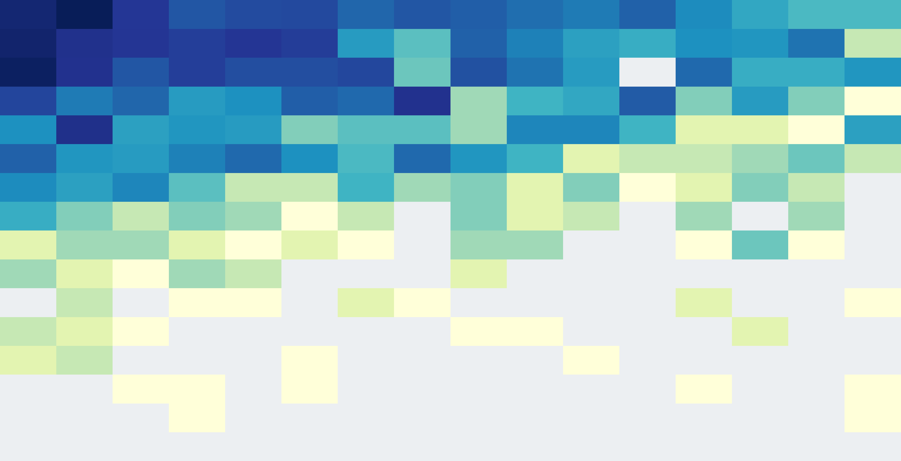

GraphForge: Training Working Agents with Graph-Anchored Workspace Synthesis
Qisheng Su et al.
Abstract（原文）
展开 / 收起 Abstract 原文
01论文速览右侧批注 ›
先用几段话回答：这篇文章为什么要做、具体想解决什么、怎样做、最后得出了什么结论。
研究背景
工作智能体要在多个PDF、表格和文档之间找依据、做计算并交付成果。训练这类能力需要真实且多样的工作区，以及能判断成果内容是否正确的任务专属评分标准。直接生成文件容易失真；仅抓取真实文件又难以自动验证完成质量。
研究目标
怎样批量构造由真实文件支撑、可执行且可追溯核验的工作任务，并用这些任务的高质量轨迹提升工作智能体？证据锚定的评分是否能改善后续轨迹选择？
研究内容
- 职业种子控制覆盖：从O*NET中筛选数字化工作，用职业、活动、执行模式和文件类型约束多样性，再检索公开案例和真实文件。
- 证据图联合生成任务与评分：节点关联来源文件和事实，边表达跨文件依赖。每条评分标准同时包含预期结果、证据锚点及检查步骤；执行者只看到任务与文件。
- 先执行再修订和筛选：教师试做后修复任务或评分标准，检查产物结构、内容与工具行为，保留Q>0.90的轨迹做SFT。
- 自采样后做拒绝采样微调：SFT模型为新任务各生成最多4条轨迹，用评分选择优质轨迹再训练，并与无锚点评分和随机选择对照。
主要结论
- 2,169条长轨迹带来跨基准提升：27B模型的GDPVal/OpenHands从1380.0到1445.7；Workspace/Claude Code从56.0到63.7；电子表格准确率从10.3到24.0。
- 收益具有一定迁移性：同一语料改善27B和35B-A3B，且从Codex采集的轨迹能改善其他执行框架；未覆盖职业同样获益。
- 锚定选择在两个基准更好：35B后续RFT使Workspace再加4.0分、电子表格再加1.0分；GDPVal无锚定点估计更高，三组差异均未统计显著。
- 评分器偏重结构缺失：删工作表降分0.377，但改行、数值和引用仅降约0.01–0.02，细粒度内容验证依然薄弱。
这项工作的可借鉴之处是让任务生成与验证共享可追溯的证据结构，并将交付物检查纳入数据准入。实验支持整套数据改善工作任务能力；证据图、修订和锚定各自的独立贡献尚未完全分离。证据定位更明确，也仍然需要更可靠的内容核验器。
02原文精读右侧批注 ›
沿着原文的章节顺序，区分每一节说了什么，以及这些内容如何支撑论文的论证。
分章节总结与分析
Abstract
p.1提出真实文件、证据图和可核验评分标准组成的数据合成流程，并报告2,169条轨迹带来的训练收益。
摘要中的有效验证应理解为证据可追溯；评分器识别细粒度错误的能力仍须结合后文审计判断。
Introduction
p.1真实工作智能体需要跨文件读取、调用工具并交付成果。已有合成路线分别面临文件真实性不足和缺乏任务专属评分标准的问题。
动机连接了文件真实性与结果验证两项要求；已有方法的差异来自作者整理，缺少统一预算下的直接对照实验。
Related Work
p.2比较通用智能体与工作智能体的数据合成路线，并梳理GDPVal、Workspace-Bench、电子表格等评测。
不同数据集的规模单位含任务和轨迹，不能直接比较数量；表1属于功能比较，无法单独证明效果优势。
Method
p.3流程分为职业种子、真实工作区、证据图与评分标准、执行后修订、成果验收五步。
关键设计是先确定职业覆盖，再从具体文件推导任务细节，减少没有文件依据的要求。
O*Net-Grounded Task-Form Seeds
p.3O*NET结合AI4Work的DIGITAL标记筛选后得到246种职业、891种DWA类型及3,419个职业—任务类型对。按职业、活动、执行模式与文件类型的边际覆盖贪心选种子。
覆盖增益为各维度1/(1+已选计数)之和，鼓励稀缺类别；覆盖广度无法保证每类任务难度或专业真实性。
Real-File Workspace Construction
p.4检索智能体将不指定公司与答案的种子实例化为公开案例，下载原生文件并去重。隐藏角色包括core、supporting、confuser、ambient。
干扰与冗余模拟检索负担；公开文件可跨组织混合，其生态真实性仍需人工检验，公共可访问性也不等于任意再分发许可。
Evidence Graphs And Verifiable Rubrics
p.4节点记录来源文件、事实字段与任务角色，边记录跨文件解释、比较与推导依赖。每条正向标准绑定交付物、要求、预期值、权重、锚点及核验程序。
图是可检查的中间表示，其内容仍可能由模型错误抽取。执行智能体只见任务与文件，评分器另见证据锚点及检查说明，因此训练数据具有隐藏验证结构。
Execution-Conditioned One-Step Revision
p.5教师先执行一次，修订智能体据原文件、图、任务与执行结果做最小修改。任务文本不变且轨迹存在时复用，否则重跑教师。
81.6%的初次执行得到复用，降低重复采样；缺少移除修订步骤的匹配消融，无法量化该模块对最终能力的独立贡献。
Artifact-Level Admission And Trajectory Cleaning
p.5先确定性交验文件名、可读格式、工作表与公式，再由智能体评分器核验内容。正向加权得分扣除有直接证据的负向惩罚后归一化，并过滤退化工具行为。
Q可以低于零，门槛分数不等于校准后的正确概率。结构检查与模型判断互补，但细微事实错误仍可能进入高分样本。
Main Results
p.5使用同一批GraphForge数据训练27B与35B-A3B，并在三个工作任务基准上测试SFT和后续拒绝采样微调。
主结果验证整套合成数据的可用性；需要拆分消融才能进一步定位图、修订与筛选各自的作用。
Training Data
p.53,638个实体化任务筛出2,153个达标任务，形成2,169条序列与2,150个唯一工作区。涵盖466种任务类型、15个职业部门、全部16种执行模式。
每任务平均23.1个文件，每序列平均50步与162k tokens；少量轨迹包含大量上下文，不能直接等同低训练成本。PDF出现在96.7%的轨迹中，文件类型分布仍有偏向。
Training And Evaluation Setup
p.6GLM-5.2承担检索、生成、修订、教师与评分。评测采用固定scaffold和pass@1；GDPVal-AA使用220任务，内部Bradley–Terry池以GLM-5.3/OpenHands=1667定标。
Elo属于内部比较池，不能当作独立官方绝对分数；同一模型参与多阶段可能引入相关偏差。不同scaffold的比较需保持配置一致。
Overall Comparison
p.727B在OpenHands的GDPVal为1380.0→1445.7，Claude Code的Workspace分数为56.0→63.7，电子表格执行准确率为10.3→24.0。35B同样获益，跨scaffold方向一致。
训练轨迹来自Codex而收益能迁移到其他scaffold，支持技能具有一定可迁移性。结果仍局限同一Qwen家族，不能外推全部模型。
Rubric-Guided Rejection Fine-Tuning
p.835B SFT在2,000个新查询各采最多4条，锚定评分超过0.95且通过过滤后保留462条。三组固定查询、候选和优化预算，比较锚定、无锚定、随机选择。
控制实验隔离查询内轨迹选择，但查询本身先由锚定流程筛入，未隔离全流程任务选择效应。锚定在Workspace和电子表格最好；GDPVal无锚定点估计更高，所有差异区间含零。
Ablation Studies
p.8文件哈希无重合，最高相似的20组13-gram无实质共享；未覆盖职业也获益。删除目标工作表使评分下降0.377，行、数值、引用扰动分别仅下降0.018、0.022、0.013。
污染审计降低直接复制疑虑，但不能排除所有语义或预训练污染。细粒度扰动响应接近非目标变化0.016，说明锚定无法保证精确内容核验。
Conclusion
p.9总结真实文件与证据图联合驱动任务、评分和轨迹筛选，以及跨模型规模和执行框架的收益。
结论对数据训练有效的支持较清楚；证据锚定普遍优于替代评分的说法需受RFT不确定性限制。
Discussion Of Limitations
p.9作者承认语料仅2,169条，未研究扩展规律，流水线受GLM-5.2能力约束，模型只覆盖同一家族。
还需补充合成与训练总成本、专家评分一致性及模块消融，才能评估可扩展性和验证可靠性。
Ai Use Statement
p.11披露使用生成式AI润色英文与辅助编码，并由作者检查内容。
这是作者对使用过程的声明，无法由论文实验独立验证。
Ethics Statement
p.11公开文档用于研究，按原使用条款发布，声明不额外收集或推断个人信息。
公开来源与许可兼容性仍需逐文件审查；声明本身未提供完整授权审计。
Reproducibility Statement
p.11说明提供方法、训练配置并给出数据模型集合地址。
本次精读未下载模型或逐项核验发布内容，复现可用性保留为待核验项。
References
p.11列出工作智能体、任务合成、职业分类和Elo评估相关文献。
参考文献用于定位研究背景；本次未逐篇核验其结果与比较口径。
A Training Configurations
p.14SFT使用Muon、3 epochs、峰值学习率2e-5、全局batch 8；RFT为1 epoch、1e-6；最大序列262,144，启用packing，超长完整序列排除。
长上下文与完整推理工具轨迹是复现关键。附录没有给出足够明确的GPU型号、数量和总GPU时长，成本仍不透明。
B Contamination Audit
p.142,150个工作区含49,750个文件实例、39,201个唯一哈希，与GDPVal的260个唯一文件零重合。覆盖与未覆盖职业胜率差0.047，95%区间[-0.079,0.175]。
未覆盖职业表现支持迁移，但区间跨零，不能声称该组优于覆盖组。仅人工审查最相似20对文本不能构成穷尽性排除。
C Gdpval Elo Confidence Intervals
p.15GDPVal主表区间来自10,000次边结果bootstrap并重拟合完整比较图，固定GLM-5.3锚点，还保留一个未展示的桥节点。
区间条件依赖比较图和锚定方案；主表单个分数区间不能直接替代配对差异检验。
D Rft Elo Confidence Intervals
p.15RFT相对固定SFT锚点直接比较，按任务UUID联合bootstrap 10,000次；三组Elo差异区间全部包含零。
这些是条件置信区间，未传播SFT锚点估计误差；GDPVal额外收益和组间排序均需保留不确定性。
关键引文
论文图表

Zotero 高亮
Zotero 笔记
03参考意义右侧批注 ›
把论文放回实际研究和复现决策中：它有什么价值，代价和风险是什么，还留下哪些问题。
风险与局限
- 只有同一Qwen家族的两种模型，缺少数据规模规律和模块级完整消融。合成与评分都依赖GLM-5.2，可能产生相关偏差；评分器漏检细微错误。GDPVal只用220任务的内部Elo池，RFT差异区间含零；训练与合成总成本未充分披露。
- 锚定与无锚定RFT共享先经锚定流程选入的462个查询；该控制只能识别查询内选择效应。
- 未在同一教师、相同任务数与token预算下对照其他数据流水线，无法单独估计证据图带来的增益。
- 公开文件组合、职业标签与专业工作真实性之间仍有差距；公开来源许可需逐项核验。
只有同一Qwen家族的两种模型，缺少数据规模规律和模块级完整消融。合成与评分都依赖GLM-5.2，可能产生相关偏差；评分器漏检细微错误。GDPVal只用220任务的内部Elo池，RFT差异区间含零；训练与合成总成本未充分披露。
成本与复现条件
SFT用Muon、3 epochs、峰值学习率2e-5、最低1e-6、cosine、warmup 0.10、weight decay 0.05、global batch 8；RFT用35B SFT初始化，1 epoch、峰值1e-6、最低1e-7。最大序列262,144，packing开启，完整超长样本排除。需支持长上下文、工具执行与多格式文件的环境；GLM-5.2贯穿合成及评分。未核验发布集合的实际完整性，论文未充分报告总算力和费用。
与我研究的关联
对研究工作智能体数据合成与自动验收具有一般参考意义：为每个要求保存来源位置、预期计算与检查程序，能使数据质量问题更易追踪。一个值得验证的设计是为数值和表格加入确定性检查，并以专家标注的错误集校准模型评分器。本条为方法延伸建议，论文未直接验证。
待追问
- 图、试执行修订和锚定分别贡献多少？在固定教师与token预算下能否拆分？
- 加入代码计算和单元格级核验，能否减少高分错误轨迹？
- 随机查询集上的锚定筛选是否仍有优势？
- 提升数据规模或更换模型家族后，收益如何变化？
我的笔记
精读版本：arXiv:2609.38923v3（2026-10-22），全文15页。仅使用本地Python提取文本生成分析；无Zotero标注，因此未生成原文高亮引句。